SECCIÓN 6D
ENGRANAJE DE DIRECCIÓN MANUAL
Precaución: Desconecte el cable negativo de la batería antes de desmontar o instalar cualquier unidad eléctrica o cuando exista la posibilidad de que una herramienta o equipo pueda entrar en contacto con bornes eléctricos expuestos. La desconexión de dicho cable ayudará a evitar lesiones personales y daños al vehículo. La llave de contacto debe estar en posición LOCK a menos que se indique lo contrario.
ESPECIFICACIONES
Especificaciones generales
| Aplicación | Descripción |
| Tipo | Cremallera y piñón |
| Relación de cambio en conjunto | 21.1 : 1 |
| Avance de cremallera | 33,1 mm/rev. |
| Carrera de la cremallera | 143 ± 2 mm |
| Ángulo de dirección | Interior | 39,08° ~ 40,77° |
| Exterior | 33,2° ~ 34,18° |
Especificaciones de apriete
| Aplicación | N•m | Árbol de transmisión izquierdo | Articulación |
| Tuerca del tirante exterior | 45 | 33 | - |
| Tuerca de bloqueo del tirante | 45 | 33 | - |
| Tornillo del soporte del mecanismo de dirección | 57 | 42 | - |
HERRAMIENTAS ESPECIALES
Tabla de herramientas especiales
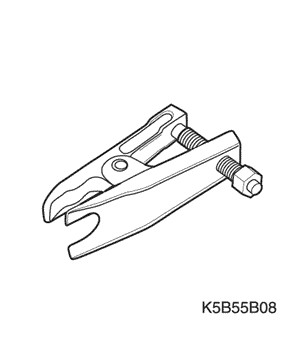
 
| KM-507-B Extractor de rótulas |
LOCALIZACION DE COMPONENTES
Mecanismo de la dirección manual de piñón y cremallera
(Indicado para conducción a izquierdas, conducción a derechas similar)
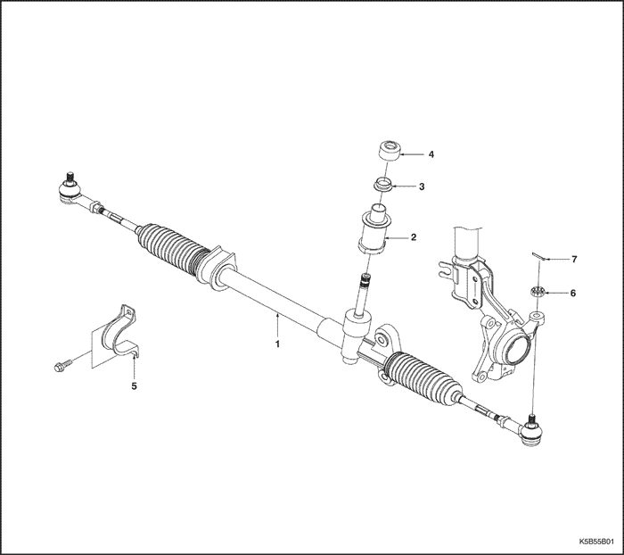
- MECANISMO DE DIRECCIÓN MANUAL
- Asiento del mecanismo de la dirección
- Conjunto del mecanismo de la dirección
- Pasacables del salpicadero
- Soporte del mecanismo de dirección
- Tuerca del tirante exterior
- Pasador de aletas
DIAGNÓSTICO
Mecanismo de la dirección manual de piñón y cremallera
| Estado | Causa probable | Medida correctora |
| Juego o flojedad excesiva en el sistema de dirección | - Mecanismo de dirección con ajustes deficientes.
| - Efectúe una comprobación de la marcha recta.
|
| | |
| Ruido de tableteo en el mecanismo de la dirección | - Lubricación insuficiente o inadecuada.
| - Lubrique el conjunto de piñón y cremallera.
|
- Fijación del mecanismo de dirección mal instalada.
| - Apriete los tornillos de fijación del mecanismo de dirección.
|
| | |
Comprobación directa
Una vez completadas todas las operaciones en el mecanismo de dirección, compruebe la posición exacta de la marcha - recta de la dirección en cada caso.
Con el vehículo sobre el suelo, coloque el volante en posición de marcha en línea recta hacia adelante. Marque el eje de los dos neumáticos en el suelo. Gire el volante completamente hacia la derecha y marque el nuevo eje de los dos neumáticos en el suelo.
| Aplicación | Valor especificado |
| Ángulo interior | 39.08 - 40.77° |
| Ángulo exterior | 33.2 - 34.18° |
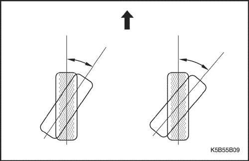
Tabla de comprobación de la marcha recta
| Paso | Medida | Valor(es) | Sí | No |
| 1 | Coloque el volante en posición de marcha en línea recta ¿Está el volante en la posición correcta? | - | Vaya al Paso 2 | - |
| 2 | ¿Está el volante descentrado en más de 5 grados? | - | Vaya al Paso 4 | Vaya al Paso 5 |
| 3 | El piñón está desplazado en la cremallera. Debe corregirse la posición del piñón de la dirección. ¿Se ha realizado la reparación? | - | Vaya al Paso 2 | - |
| 4 | Desmonte el volante y céntrelo sobre las estrías del eje. ¿Se ha realizado la reparación? | - | Vaya al Paso 2 | - |
| 5 | Gire el volante completamente hacia la derecha. Mida los ángulos interior y exterior del eje de los neumáticos en comparación con el eje en línea recta. ¿Coinciden los ángulos con el valor especificado? | Consulte el apartado "Comprobación de la marcha recta" de esta sección. | Sistema OK | Vaya al Paso 6 |
| 6 | - El conjunto de la cremallera no se montó correctamente. Haga las reparaciones necesarias.
- ¿Se ha realizado la reparación?
¿El valor de ajuste de combustible de larga duración está por debajo del valor especificado? | - | Vaya al Paso 5 | - |
Restablecimiento del volante
- Gire el volante hacia la izquierda y la derecha primero rápidamente y después con lentitud.
- Compruebe si el volante vuelve a su posición de igual modo cuando se gira a la derecha que cuando se giró a la izquierda.
- Gire el volante 90° durante 1-2 segundos y suéltelo mientras conduce a poca velocidad.
- Si el volante recupera su posición por encima del 70%, el restablecimiento del volante es el adecuado.
- Si el restablecimiento no es el correcto, compruebe la presión de los neumáticos y el funcionamiento del mecanismo de la dirección. Repare el fallo.
Compruebe la resistencia de giro del tirante exterior y del interior
- Gire la rótula del tirante exterior y del interior unas 10 veces.
- Use un resorte equilibrador para comprobar la resistencia de giro de cada rótula.
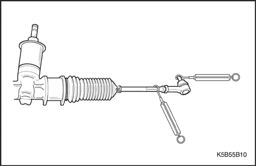
| Aplicación | Valor especificado |
| Rótula del tirante exterior | 0,5 - 3,0 N•m (4,4 - 26,6 lb-pulg.) |
| Rótula del tirante interior | 1 - 3,5 N•m (8,9 - 31 lb-pulg.) |
- Si los valores superan los valores especificados, sustituya el tirante exterior o el tirante interior.
- Si es alguna de las rótulas de los tirantes la que presenta problemas, sustitúyala.
MANTENIMIENTO Y REPARACIÓN
servicio con vehículo en marcha
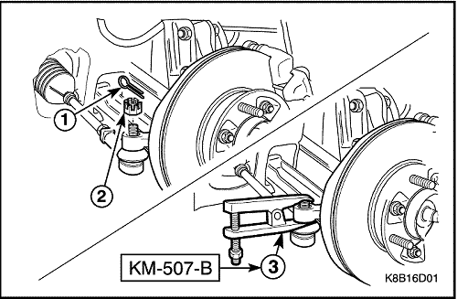
Barra de acoplamiento exterior
Herramientas necesarias
Extractor de rótulas KM-507-B
Procedimiento de desmontaje
- Desmonte la rueda. Consulte la Sección 2E, Neumáticos y ruedas.
- Desenganche el tirante exterior del conjunto de mangueta.
- Quite el pasador de aletas (1).
- Quite la tuerca almenada (2).
- Use un extractor de rótulas KM-507-B para separar el extremo del tirante (3).
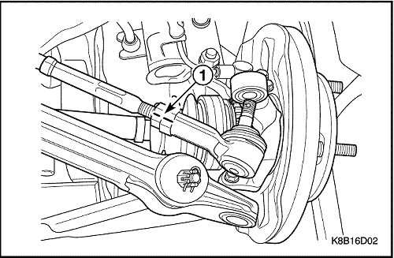
- Desmonte el tirante exterior.
- Marque el tirante, la tuerca de bloqueo del tirante y el extremo del tirante (1).
- Afloje en sentido contrario a las agujas del reloj la tuerca de bloqueo del tirante (2).
- Afloje el tirante exterior (3).
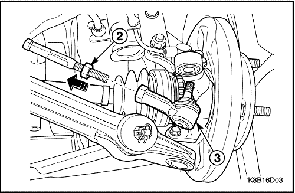
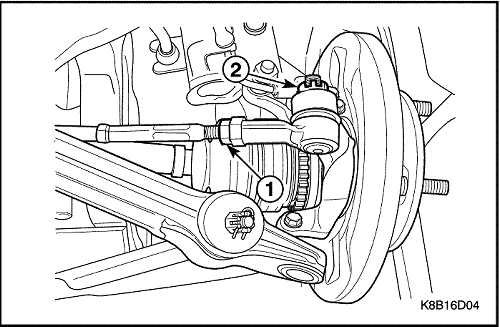
procedimiento de montaje
- Monte el tirante exterior.
- Coloque la tuerca de bloqueo del tirante (1).
Apretar
Apriete la tuerca de bloqueo del tirante hasta 45 N•m (33 lb-pie).
- Conecte el tirante exterior a la mangueta.
- Coloque la tuerca del tirante exterior (2).
Apretar
Apriete la tuerca del tirante exterior hasta 45 N•m (33 lb-pie).
- Coloque el pasador de aleta.
- Monte la rueda. Consulte la Sección 2E, Neumáticos y ruedas.
- Realice el ajuste de convergencia girando el dispositivo de ajuste del tirante. Consulte la
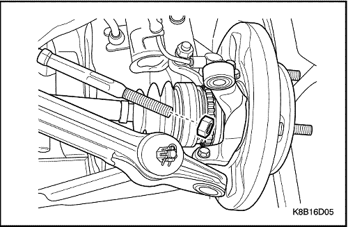
Guardapolvo del piñón y la cremallera
Procedimiento de desmontaje
- Desmonte el extremo del tirante exterior. Consulte el apartado de esta sección.
- Coloque la tuerca de bloqueo del tirante.
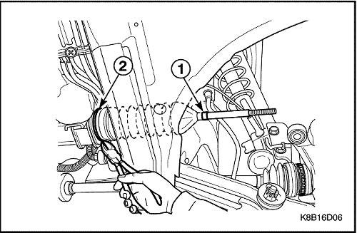
- Desmonte el guardapolvo del piñón y la cremallera.
- Quite la abrazadera del guardapolvo (1).
- Corte la abrazadera de fijación del guardapolvo (2).
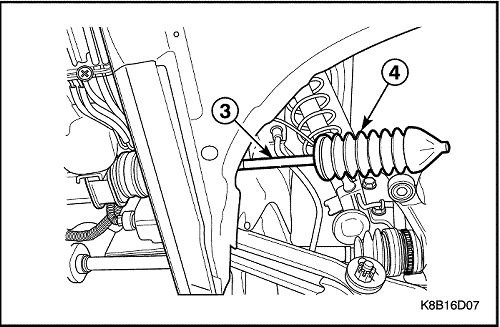
- Unte grasa en el tirante para desmontarlo sin dificultad (3).
- Desmonte el guardapolvo (4).
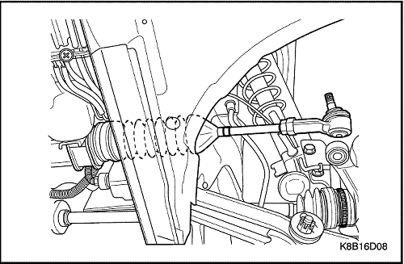
procedimiento de montaje
- Monte el piñón y la cremallera con la abrazadera y la abrazadera de fijación.
- Ponga la tuerca de bloqueo del tirante.
- Coloque el bloqueo del tirante exterior. Consulte el apartado de esta sección.
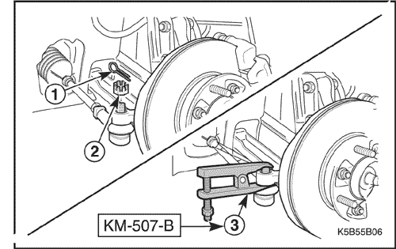
Conjunto de cremallera y piñón
(Indicado para conducción a izquierdas, conducción a derechas similar)
Procedimiento de desmontaje
- Quite el tornillo de sujeción inferior del eje intermedio. Consulte la Sección 6E, Volante y columna de dirección.
- Desmonte las ruedas. Consulte la Sección 2E, Neumáticos y ruedas.
- Desenganche el extremo del tirante del conjunto de mangueta.
- Quite el pasador de aletas (1).
- Quite la tuerca del tirante (2).
- Use un extractor de rótulas KM-507-B para separar el tirante exterior (3).
- En vehículos equipados con caja de cambios automática, desmonte la tapa inferior de la caja de cambios. Consulte la sección 9N, Chasis y bajos.
- Desmonte el silenciador de escape delantero. Consulte la sección 1G, Sistema de escape del motor.
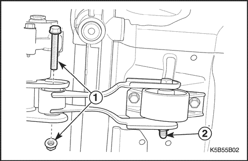
- Desmonte el soporte de la caja de cambios.
- Quite el tornillo y la tuerca del lado de la caja de cambios (1).
- Afloje el tornillo del lado de la carrocería (2).
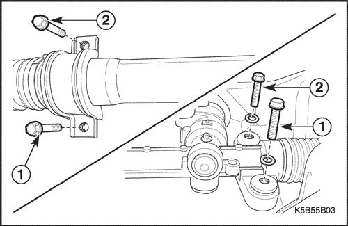
- Desmonte el conjunto de piñón y cremallera de la dirección.
- Quite los tornillos del soporte inferior del lado derecho e izquierdo del mecanismo de la dirección (1).
- Quite los tornillos del soporte superior del lado derecho e izquierdo del mecanismo de la dirección (2).
Importante: Después de mover el mecanismo hacia el lado del pasajero y de tirar del mecanismo del lado del conductor por el hueco de los bajos de carrocería, desmonte el mecanismo de dirección.
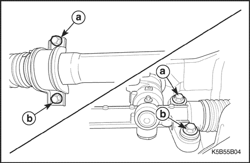
procedimiento de montaje
- Monte el conjunto de cremallera y piñón.
- Monte el mecanismo de la dirección manual con los tornillos superiores (a).
Apretar
Apriete los tornillos superiores del mecanismo hasta 57 N•m (42 lb-pie).
- Monte el mecanismo de la dirección manual con los tornillos inferiores (b).
Apretar
Apriete los tornillos inferiores del mecanismo hasta 57 N•m (42 lb-pie).
- Monte el soporte de la caja de cambios con sus tornillos y tuercas.
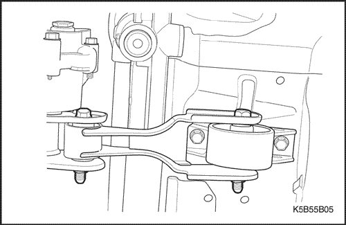
Apretar
Apriete los tornillos y las tuercas hasta 80 N•m (59 lb-pie).
- Monte el silenciador de escape delantero. Consulte la sección 1G, Sistema de escape del motor.
- En vehículos equipados con caja de cambios automática, monte la tapa inferior de la caja de cambios. Consulte la sección 9N, Chasis y bajos.
- Conecte el tirante exterior y el pasador de aletas a la mangueta.
Apretar
Apriete la tuerca del tirante exterior hasta 45 N•m (33 lb-pie).
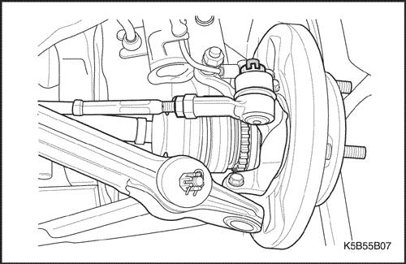
- Monte las ruedas. Consulte la Sección 2E, Neumáticos y ruedas.
- Ponga el tornillo de sujeción inferior del eje intermedio. Consulte la Sección 6E, Volante y columna de dirección.
DESCRIPCIÓN GENERAL Y FUNCIONAMIENTO DEL SISTEMA
Piñón y cremallera de accionamiento manual
El sistema de dirección manual de piñón y cremallera consta de dos componentes principales: la cremallera y el piñón. El movimiento del piñón se transfiere a través los dientes del piñón, que engranan con los dientes de la cremallera, haciendo que ésta se mueva. Esa fuerza se transmite a continuación por medio de las palancas en los conjuntos soportes, que hacen girar las ruedas.